--- Collected by our very own UTBM robocar ---
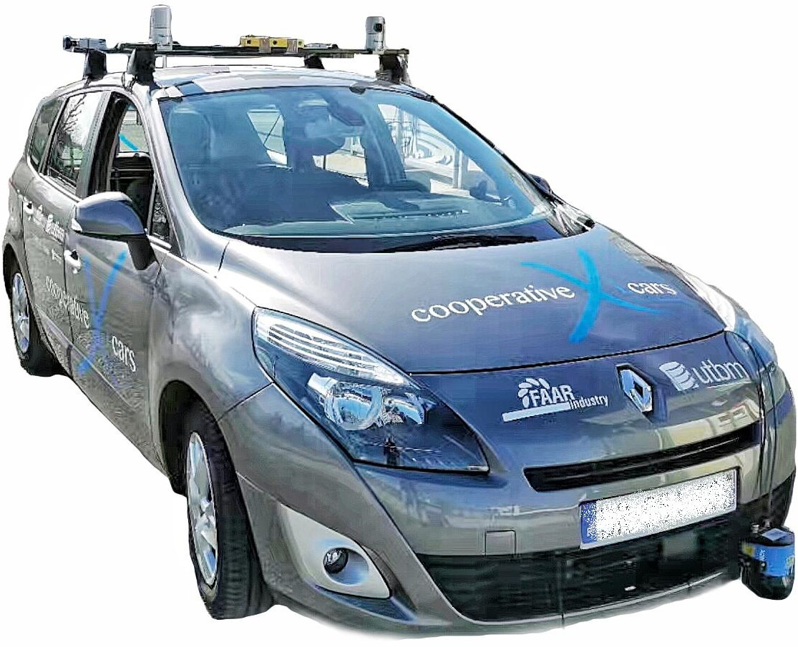 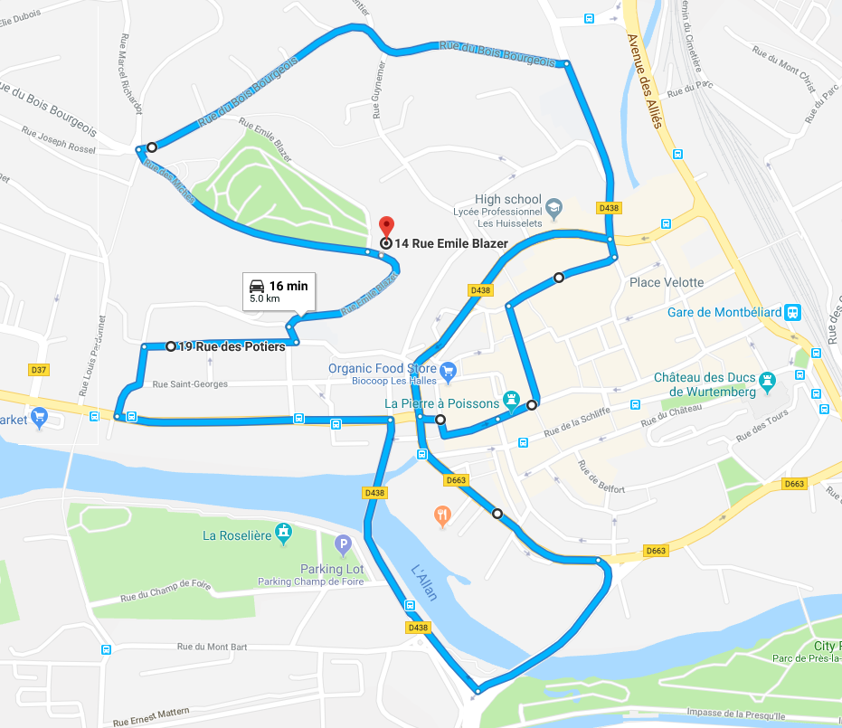 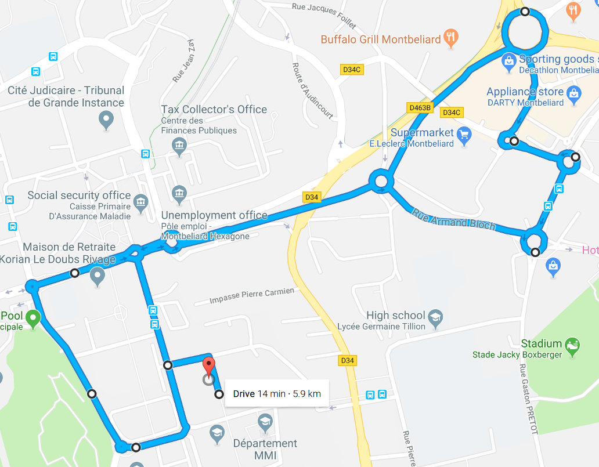
This dataset was collected with our robocar (in human driving mode of course), equipped up to eleven heterogeneous sensors, in the downtown (for long-term data) and a suburb (for roundabout data) of Montbéliard in France. The vehicle speed was limited to 50 km/h following the French traffic rules. For the long-term data, the driving distance is about 5.0 km (containing a small and a big road loop for loop-closure purpose) and the length of recorded data is about 16 minutes for each collection round. In addition to the typical eastern French city, users can feel the daily and seasonal changes of the city. For a quick overview, please refer to the following video.
For the roundabout data, the driving distance is about 4.2 km (containing 10 roundabouts with various sizes) and the length of recorded data is about 12 minutes.
This dataset provides:
If you publish work based on, or using, this dataset, we would appreciate citations to the following:
@article{utbm_robocar_dataset,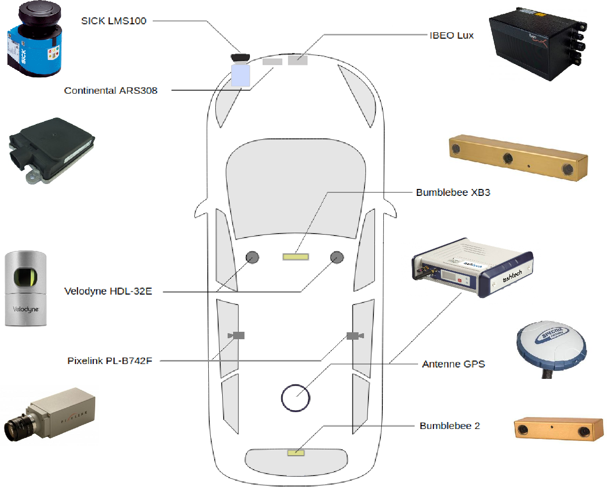 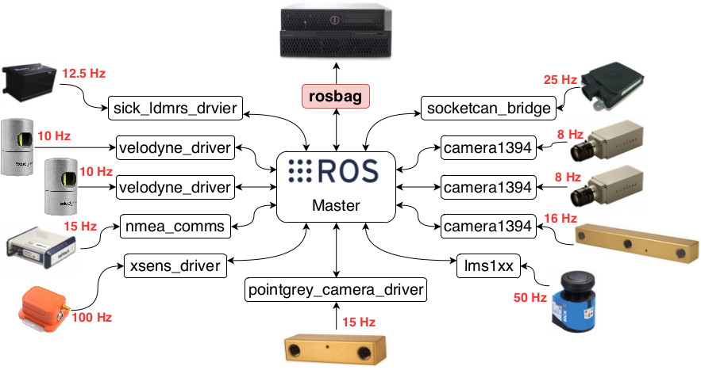
Our design mainly adheres to the following two principles: 1) strengthen the visual scope as much as possible, and 2) maximize the overlapping area perceived by multiple sensors. In particular:
For more details, please refer to our paper (in submission).
Many new research challenges have been introduced in this dataset, such as:
|
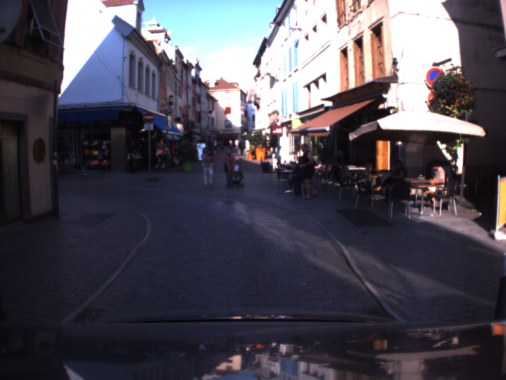 | 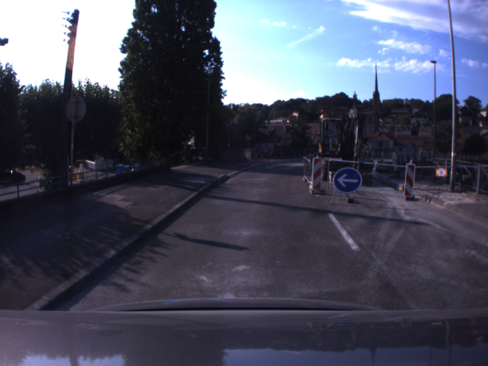 | 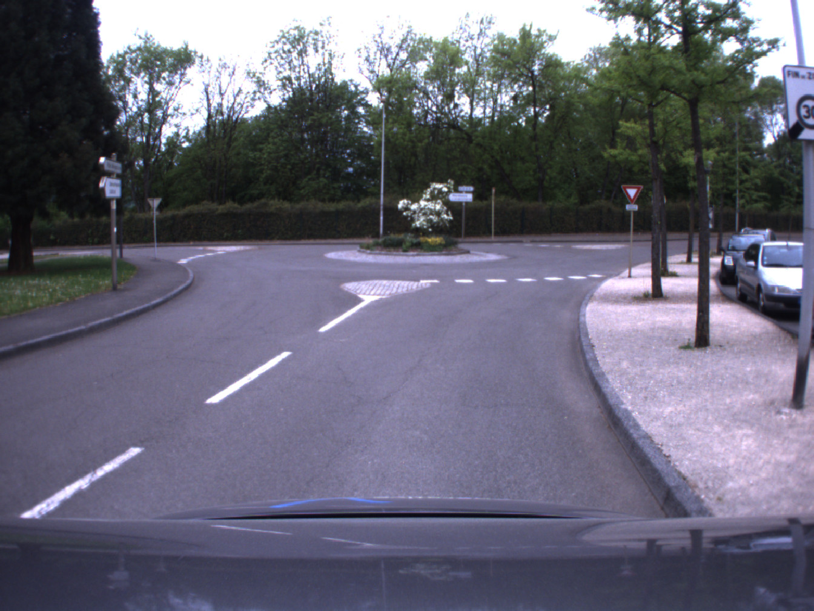 | 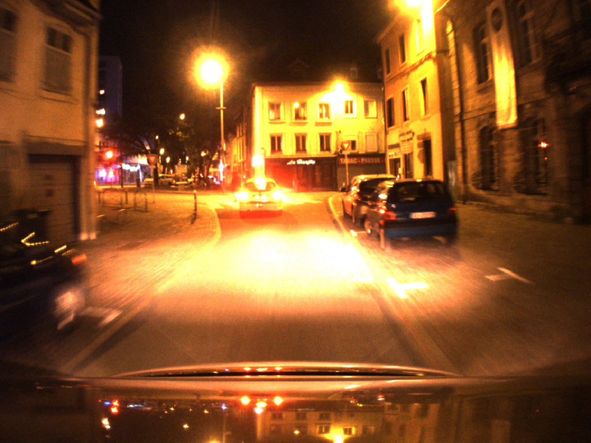 |
| sloping road | shared zone | construction bypass | roundabout | night |
| 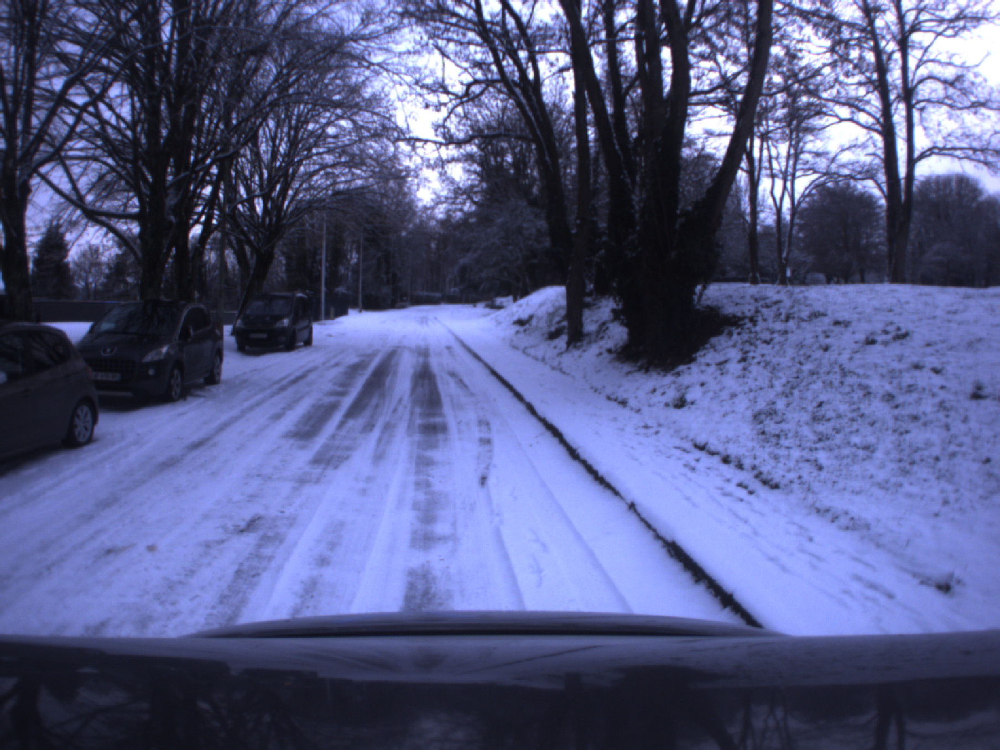 | |
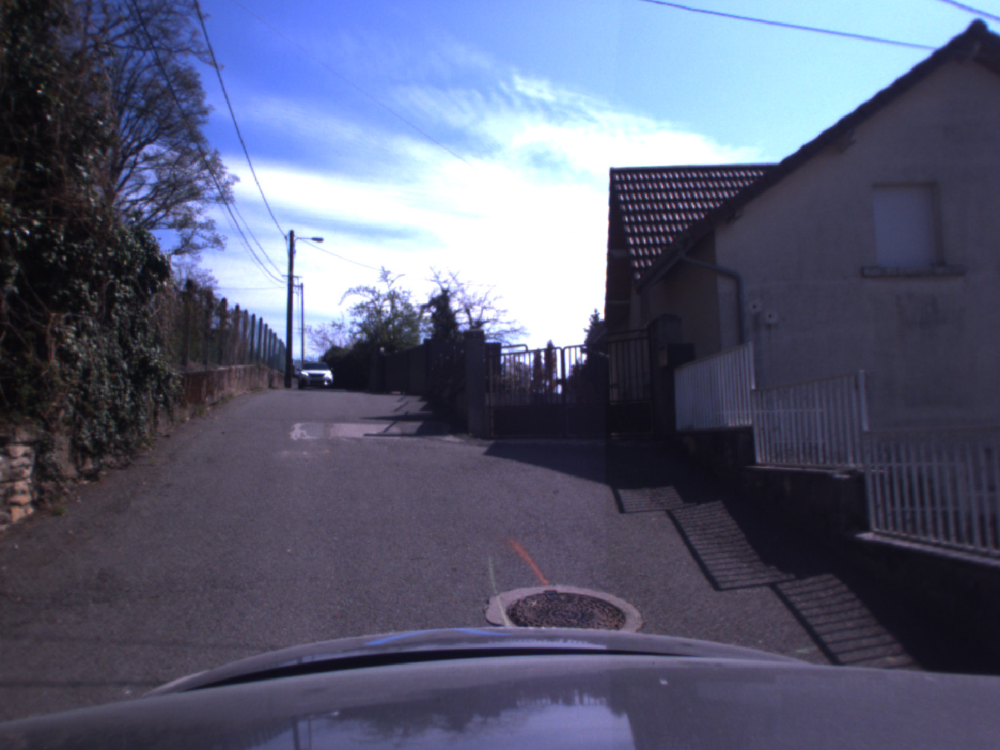 | 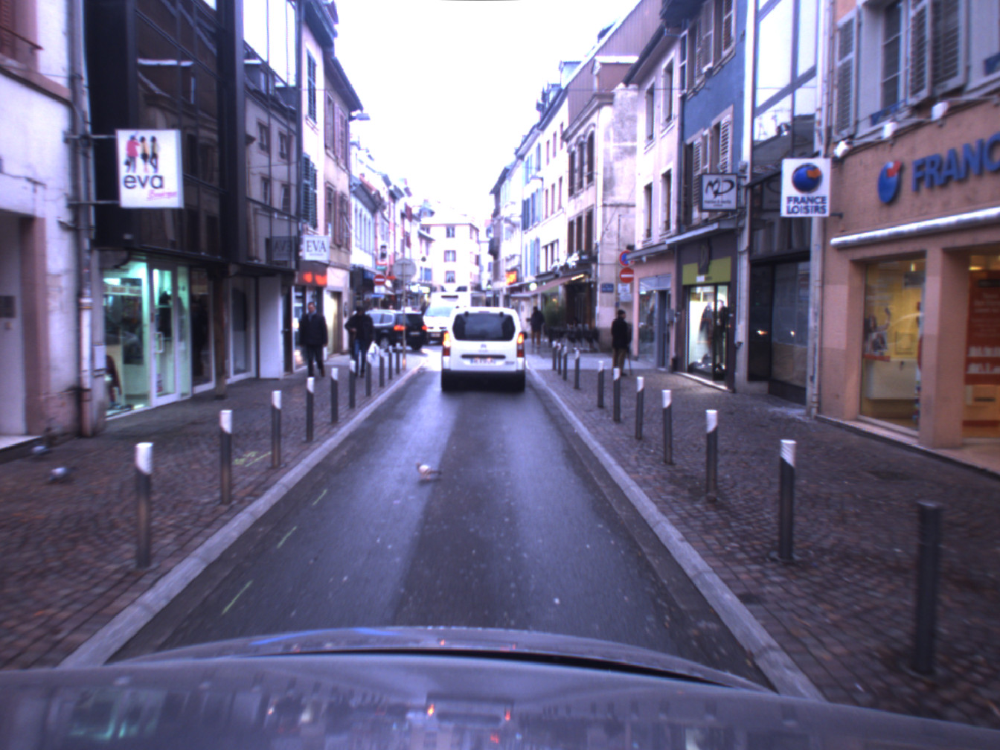 | |
| snow | right overtaking* | crossing | pigeon | police |
Please note that all rosbags are compressed, please decompress them as needed.
Long-term data:| Date | Local Time (Paris) | Sensors | Raw data |
|---|---|---|---|
| 2018-05-02 (Wed, evening) | 20:40 - 20:54 (14m30s) | 2 × Velodyne / ibeo / SICK / IMU / GPS-RTK | rosbag |
| 2018-05-02 (Wed, night) | 21:28 - 21:42 (13m55s) | 2 × Velodyne / ibeo / SICK / IMU / GPS-RTK / Bumblebee XB3 | rosbag (images)/ |
| 2018-07-13 (Fri, sunny) | 14:16 - 14:33 (16m59s) | 2 × Velodyne / ibeo / SICK / IMU / GPS-RTK | rosbag |
| 2018-07-16 (Mon, sunny) | 16:10 - 16:26 (15m59s) | 2 × Velodyne / ibeo / SICK / IMU / GPS-RTK | rosbag |
| 2018-07-17 (Tue, sunny) | 15:40 - 15:56 (15m59s) | 2 × Velodyne / ibeo / SICK / IMU / GPS-RTK | rosbag |
| 2018-07-18 (Wed, sunny) | 15:04 - 15:21 (16m39s) | 2 × Velodyne / ibeo / SICK / IMU / GPS-RTK | rosbag+ |
| 2018-07-19 (Thu, sunny) | 16:15 - 16:31 (15m26s) | 2 × Velodyne / ibeo / SICK / IMU / GPS-RTK | rosbag- |
| 2018-07-20 (Fri, cloudy) | 14:35 - 14:51 (16m45s) | 2 × Velodyne / ibeo / SICK / IMU / GPS-RTK | rosbag |
| 2019-01-10 (Fri, snow) | 09:06 - 09:17 (10m59s) | 1 × Velodyne / ibeo / SICK / IMU | rosbag* |
| 2019-01-31 (Fri， snow) | 08:54 - 09:10 (15m59s) | 1 × Velodyne / ibeo / SICK / IMU / GPS | rosbag* |
| 2019-04-18 (Thu， sunny) | 11:07 - 11:22 (14m55s) | 1 × Velodyne / ibeo / SICK / IMU / GPS-RTK / radar | rosbag |
| +Only partial GPS-RTK data. | |||
| -Best data quality, recommended for evaluation. | |||
| *Only part of the itinerary recorded due to adverse weather conditions. | |||
| /You might want to add_header_time_offset.py | |||
| Date | Local Time (Paris) | Sensors | Raw data |
|---|---|---|---|
| 2019-04-12 (Fri, cloudy) | 18:14 - 18:26 (12m10s) | 1 × Velodyne / ibeo / SICK / IMU / GPS-RTK / radar | rosbag |
| 2019-04-18 (Thu, sunny) | 12:03 - 12:15 (11m59s) | 1 × Velodyne / ibeo / SICK / IMU / GPS-RTK / radar | rosbag |
Please note that, 1) it is a growing dataset and will be incrementally published, and 2) images will be incrementally available after processing to meet the GDPR requirements.
| roslaunch utbm_dataset_play.launch bag:=path_to_your_rosbag |
By using the provided launch file, you will have:
https://github.com/epan-utbm/utbm_robocar_dataset
We take privacy very seriously and handle personal data in line with the General Data Protection Regulation (GDPR) (EU) 2016/679. To this end, we used deep learning-based methods to post-process the images in order to blur face and license plate information. However, if you still find yourself or your personal belongings in the data, please contact us and we will immediately remove the corresponding information from the dataset.

This work is licensed under a Creative Commons Attribution-NonCommercial-ShareAlike 4.0 International License.
Copyright (c) 2018 Zhi Yan, Li Sun, Tomas Krajnik, and Yassine Ruichek.
This work was supported by the Quality Research Bonus (BQR) of the University of Technology of Belfort-Montbéliard (UTBM), the Contrat de Plan État-Région (CPER) 2015-2020 Mobilitech, and the PHC Barrande programme under grant agreement No. 40682ZH (3L4AV).
The authors would like to thank Abdeljalil Abbas-Turki, Olivier Lamotte, Jocelyn Buisson, and Fahad Lateef for their help in building the dataset, the Lincoln Centre for Autonomous Systems (L-CAS) for hosting the dataset, and the reviewers of ICRA 2020 in helping improve the manuscript.